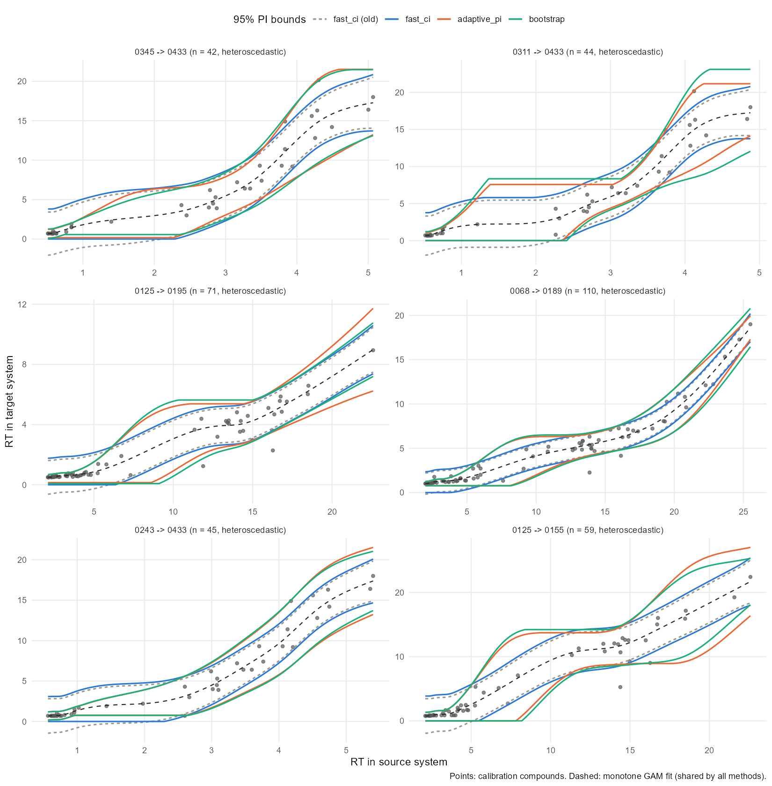
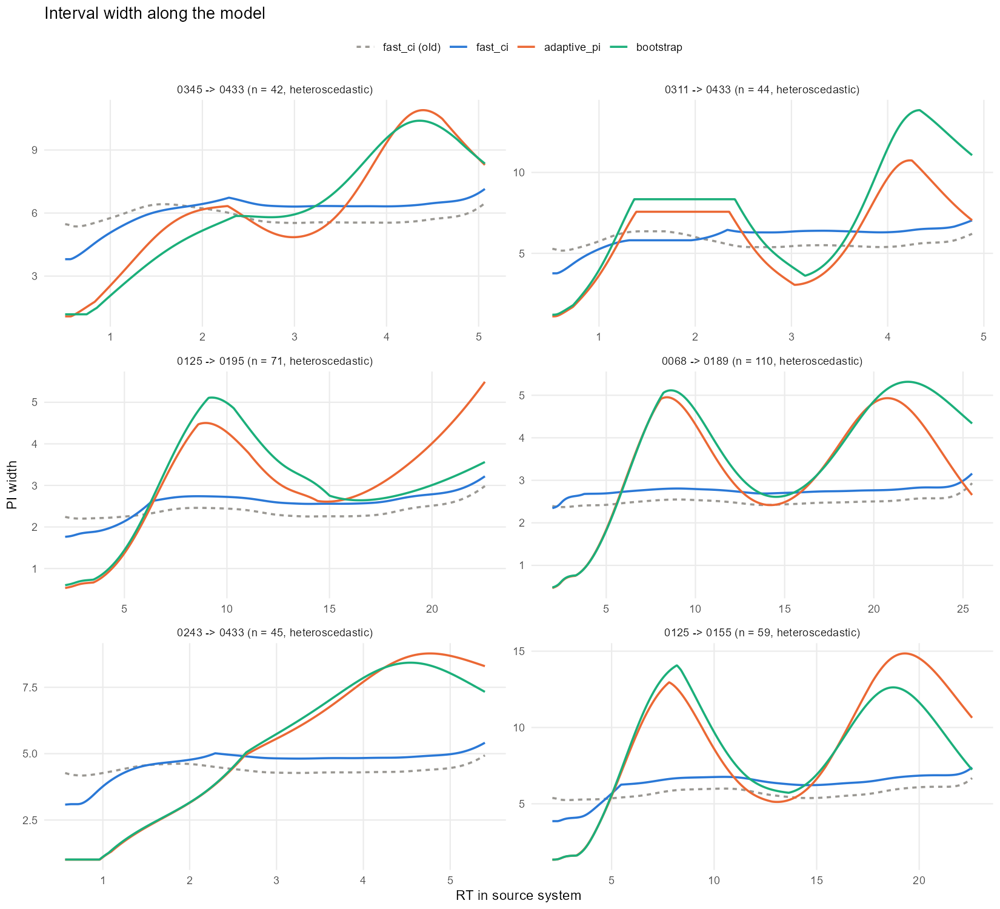
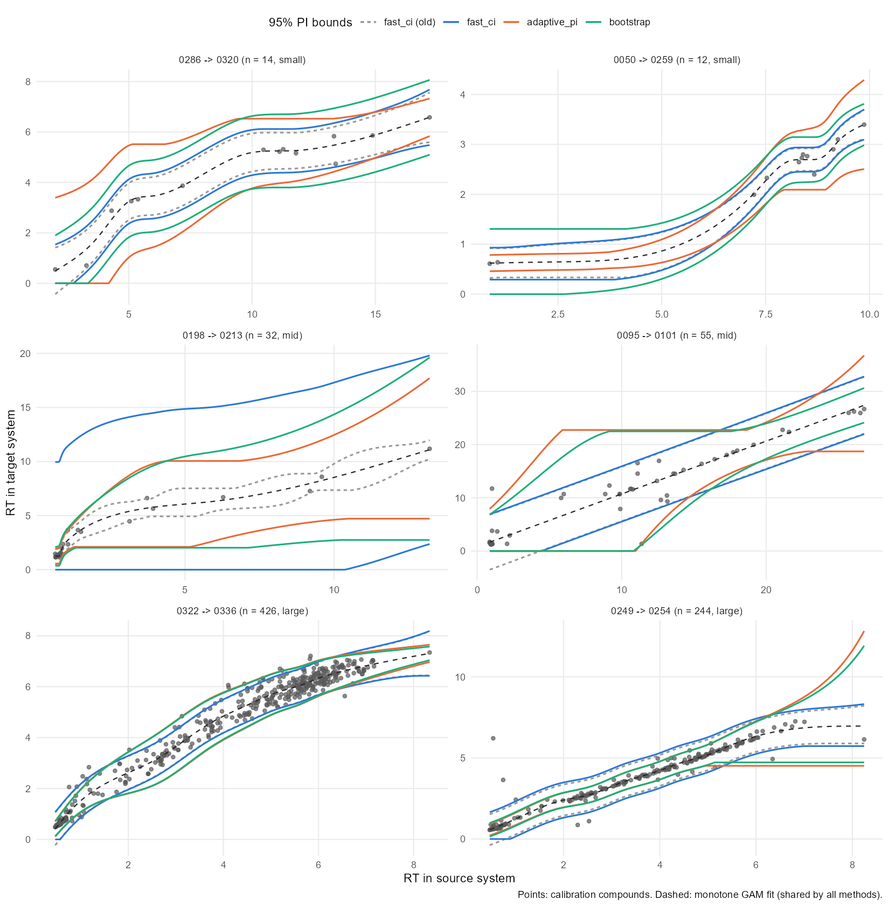
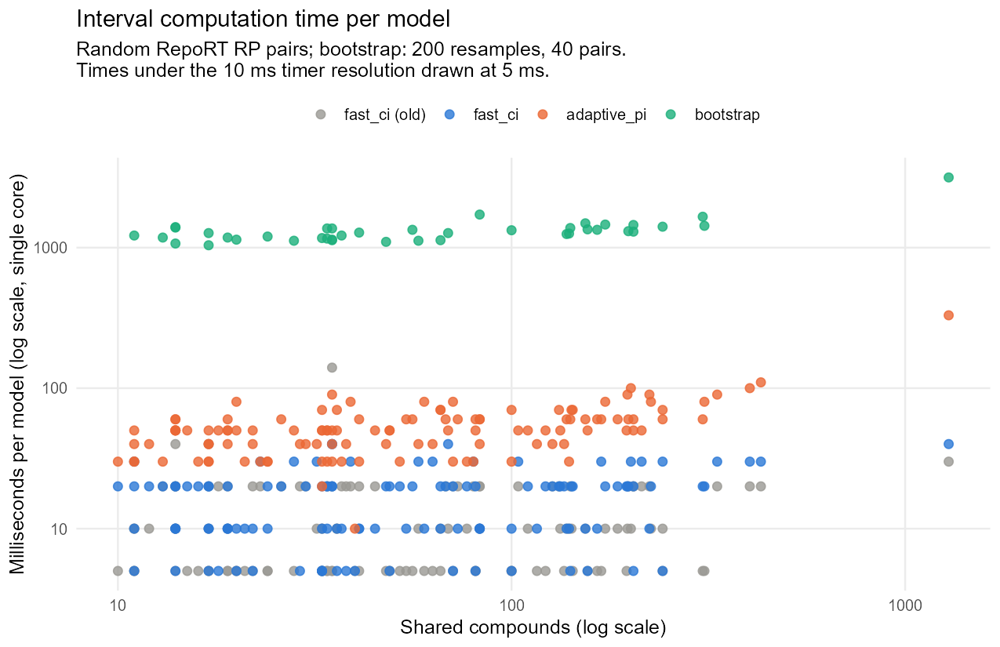

| Method | Coverage | Quiet | Noisy | Interval score | Median width / range | Width ratio | Failures | Absurd |
|---|---|---|---|---|---|---|---|---|
| adaptive_pi | 0.946 | 0.948 | 0.945 | 0.486 | 0.327 | 4.501 | 0 | 24 |
| fast_ci | 0.955 | 0.974 | 0.934 | 0.539 | 0.311 | 1.205 | 0 | 15 |
| bootstrap | 0.948 | 0.951 | 0.945 | 0.473 | 0.316 | 4.687 | 0 | 21 |
| fast_ci (before fix) | 0.939 | 0.965 | 0.912 | 0.560 | 0.249 | 1.150 | 0 | 10 |
| bootstrap (before fix) | 0.594 | 0.636 | 0.549 | 0.654 | 0.118 | 6.181 | 0 | 5 |
| weighted sigma | 0.887 | 0.943 | 0.827 | 0.568 | 0.165 | 1.361 | 0 | 2 |
| MAD sigma | 0.830 | 0.912 | 0.740 | 0.649 | 0.142 | 1.679 | 0 | 4 |
| scat | 0.896 | 0.950 | 0.837 | 0.547 | 0.197 | 1.172 | 0 | 4 |
| qgam | 0.968 | 0.971 | 0.964 | 0.561 | 0.325 | 1.610 | 22 | 14 |
| gaulss | 0.917 | 0.923 | 0.910 | 0.551 | 0.214 | 10.618 | 14 | 9 |
Prediction Interval Benchmark
Coverage, adaptivity and speed of the interval methods on RepoRT system pairs
Source:vignettes/benchmark.qmd
rePredRet offers three ways to compute the 95% prediction interval (PI) around the monotone GAM (see Methods):
| Method | Interval width | Calibration |
|---|---|---|
adaptive_pi (default) |
follows the local scatter | cross-validated conformal |
fast_ci |
nearly constant | normal quantile, leave-one-out residual variance |
bootstrap |
follows the local scatter | out-of-bag conformal (200 refits) |
This article compares them with each other, with the versions before they were fixed, and with the alternatives suggested in an MSc thesis evaluation (B. Hamidová, 2026): a weighted or MAD residual scale, a heavy-tailed scat likelihood, quantile GAMs (qgam) and a location-scale GAM (gaulss).
Setup
- Data: RepoRT reversed-phase systems. Of the 49,570 ordered pairs with at least 10 shared compounds, one direction per pair was sampled at random: 40 pairs with 10-15 compounds, 40 with 30-60 and 30 with 200 or more. Another 25 pairs were chosen for clearly unequal scatter along the model: the largest ratio of the median absolute residual between thirds of the RT range, among 600 random pairs with R² ≥ 0.8.
- Coverage: compounds were held out by cross-validation (leave-one-out up to 30 compounds, 10-fold up to 100, 5-fold above). A held-out compound is covered if its measured RT lies inside the PI of the model built without it.
- Quiet / noisy: each compound is labelled by the scatter of its neighbours along the source RT, split at the pair’s median. An interval whose width follows the scatter covers about 95% in both.
- Interval score: width + (2 / 0.05) × distance outside the interval, divided by the target RT range (median over pairs; lower is better). It rewards coverage and narrow intervals together.
- Width ratio: 95th / 5th percentile of the width along the model (1 = constant).
- Failures: fits that errored or gave non-finite bounds. Absurd: median width larger than the target RT range.
The script is inst/benchmark/pi_benchmark.R.
Results
| Method | small (10-15) | mid (30-60) | large (200+) | heteroscedastic | heteroscedastic, noisy regions |
|---|---|---|---|---|---|
| adaptive_pi | 0.864 | 0.954 | 0.949 | 0.946 | 0.926 |
| fast_ci | 0.895 | 0.948 | 0.960 | 0.951 | 0.909 |
| bootstrap | 0.888 | 0.955 | 0.950 | 0.948 | 0.926 |
| fast_ci (before fix) | 0.831 | 0.906 | 0.952 | 0.934 | 0.876 |
| bootstrap (before fix) | 0.871 | 0.743 | 0.529 | 0.724 | 0.661 |
| weighted sigma | 0.788 | 0.848 | 0.901 | 0.879 | 0.772 |
| MAD sigma | 0.749 | 0.800 | 0.849 | 0.779 | 0.588 |
| scat | 0.854 | 0.880 | 0.911 | 0.844 | 0.699 |
| qgam | 0.796 | 0.953 | 0.975 | 0.982 | 0.965 |
| gaulss | 0.761 | 0.869 | 0.937 | 0.894 | 0.889 |
-
adaptive_picovers 94.6% overall, and about the same in quiet and noisy regions (94.8% / 94.5%). Its width varies along the model (median ratio 4.5). -
fast_cicovers 95.5%, but too much in quiet regions and too little in noisy ones (97.4% / 93.4%). In pairs with unequal scatter it covered 90.9% in the noisy regions. Before the fix (in-sample residual variance and running-maximum bounds) it covered 93.9% overall and 83.1% with 10-15 compounds. -
bootstrapbehaves likeadaptive_pi(94.8% coverage) at 25-50 times the cost. Before the fix it was a confidence interval of the curve rather than a prediction interval (59.4% coverage). - A weighted or MAD residual scale makes the interval narrower but undercovers, most of all in noisy regions. Outliers are part of the data the interval must cover; a robust scale only helps together with an empirical calibration.
-
scatkeeps a constant width and undercovers.qgamcovers well from 30 compounds up but failed 22 fits, mostly with 10-15 compounds, and takes about 1.3 s per model.gaulssadapts the width but is unstable with few compounds (14 failures, very large width ratios).
Few compounds
With 10-15 shared compounds no method reaches 95%: adaptive_pi covered 86.4%, fast_ci 89.5% and bootstrap 88.8%. Treat the intervals of models with fewer than about 20 compounds as roughly 85-90% intervals.
Examples
The bands of the three methods, and of fast_ci before the fix, on pairs with unequal scatter. adaptive_pi and bootstrap are narrow where the compounds agree, often in the early-eluting cluster, and wide where they scatter. Where the raw bound would decrease, the monotone bound is flat.


Pairs of different sizes:

Speed
Single-core time to compute the interval, including the monotone fit, on 120 random pairs (bootstrap: 40 pairs). The last two columns extrapolate to the about 50,000 models of the full pipeline.
| Method | Models | Mean ms | Median ms | Max ms | Hours, 50k models, 1 core | Hours, 50k models, 4 cores |
|---|---|---|---|---|---|---|
| adaptive_pi | 120 | 54.3 | 50 | 330 | 0.75 | 0.19 |
| fast_ci | 120 | 15.7 | 20 | 40 | 0.22 | 0.05 |
| bootstrap | 40 | 1332.7 | 1275 | 3160 | 18.51 | 4.63 |
| fast_ci (old) | 120 | 10.5 | 10 | 140 | 0.15 | 0.04 |

Most of the time of adaptive_pi is the scale model (a Gamma GAM). Its five cross-validation refits are cheap because they reuse the smoothing parameter of the full fit.
Conclusion
adaptive_pi is the default: it is calibrated in quiet and noisy regions and costs about 50-90 ms per model. Use fast_ci when speed matters more than an interval that follows the local scatter.